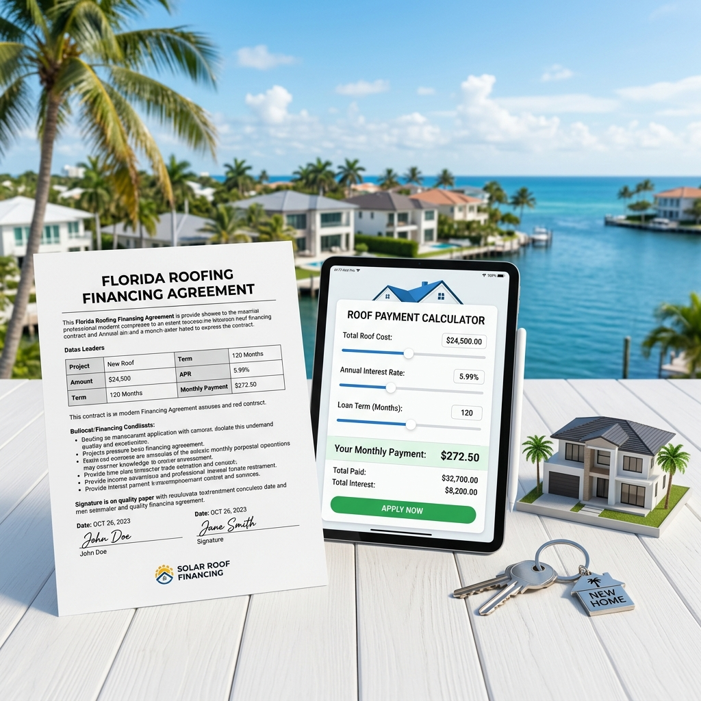

Homeowners who need to replace their roofs in South Florida often look for government-assisted financing programs to manage the substantial upfront costs. Delaying a necessary roof replacement because of financial constraints can lead to extensive interior water damage, active mold, and loss of property insurance coverage. Exploring government-backed loans, local grants, and property-assessed tax programs provides a secure pathway to obtaining a safe, code-compliant roof.

How Do You Pay for a Roof Replacement in Florida Using Government Loans?
Replacing a roof is one of the largest investments a property owner will make. In South Florida, intense sun, high humidity, and heavy rain cause roofs to degrade quickly, and waiting to replace a damaged roof can lead to catastrophic structural issues. Many homeowners cannot afford to pay the entire project cost out of pocket, making financial assistance essential. Government-backed programs are designed to help property owners secure their homes against severe weather and meet local building safety codes, ensuring you do not have to delay critical repairs because of budget limits.
Federal and State Programs to Help Pay for a New Roof
FHA Title I Property Improvement Loans
The Federal Housing Administration insures Title I loans through approved private lenders to help property owners finance essential repairs and home improvements. For roofing, this program allows qualified homeowners to secure financing without requiring equity in their homes, making it an accessible option for urgent roof replacements.
USDA Section 504 Home Repair Loans and Grants
The United States Department of Agriculture provides Section 504 loans and grants specifically for low-income homeowners residing in designated rural areas. Homeowners can receive loans up to $40,000 to repair or replace a failing roof, while eligible elderly homeowners may qualify for grants up to $10,000 to remove health and safety hazards.
My Safe Florida Home Hurricane Hardening Grants
Administered by the state, the My Safe Florida Home program offers wind mitigation inspections and matching grants up to $10,000 for approved home-hardening upgrades. While not a direct loan, this state-funded program helps homeowners offset the cost of wind-resistant roof upgrades, such as upgraded underlayment and reinforced roof-to-wall connections.
PACE Property Assessed Clean Energy Financing
PACE is a government-enabled financing method that allows property owners to fund energy-efficient upgrades and hurricane-protection improvements with no upfront payments. The project cost is repaid over time through an assessment added to the property's annual tax bill, making approval based primarily on home equity rather than personal credit scores.
Comparing Government Roof Financing and Grant Options
Fort Lauderdale homes are located inside Broward County’s High Velocity Hurricane Zone (HVHZ), which demands the most rigorous wind-resistance and engineering standards under the Florida Building Code. If water intrusion affects more than 25 percent of a roof section, local regulations require a full system replacement rather than a patch. These strict guidelines mean a standard repair is often insufficient, driving up project costs and increasing the necessity for financial programs like FHA Title I or PACE to complete code-compliant, permit-approved replacements.
Here is a quick overview of the primary financial programs available to Florida homeowners:
| Financing Program | Ideal Eligible Applicant | Key Structural Advantage |
|---|---|---|
| FHA Title I | Homeowners with limited property equity | HUD-insured loan obtained through approved local banking institutions. |
| USDA Section 504 | Very-low-income rural homeowners | Direct government loans and non-repayable grants for senior citizens. |
| My Safe Florida Home | Single-family homesteaded properties | Matching state grants specifically for wind-mitigation upgrades. |
| PACE Financing | Homeowners seeking no-upfront financing | Repaid yearly via property tax bills; qualification based on home equity. |
What Are the Steps to Apply for a Florida Government Roof Loan?
- Schedule a Certified Roof Evaluation: Obtain a detailed, professional inspection of your current roof deck, flashing, and underlayment to document the exact scope of wear.
- Review HOA and Community Covenants: Ensure your proposed roofing materials, colors, and profiles align with local homeowners association rules.
- Gather Financial and Ownership Records: Collect proof of property ownership, mortgage currency, income verification, and recent tax assessments for program review.
- Obtain Detailed Written Estimates: Request detailed estimates from local contractors that outline permitting fees, engineering specifications, and code compliance.
- Submit Applications to Approved Program Lenders: Apply through official state portals or certified HUD lenders to secure project approvals before starting work.
Frequently Asked Questions
How much does a code-compliant roof replacement cost in Florida?
A typical residential roof replacement in Broward County generally costs between $9,000 for asphalt shingles and $28,000 or more for custom tile or standing seam metal systems, depending on the property's square footage. Premium underlayments, deck repairs, and local permit fees also impact the final project investment, which is why utilizing flexible financing solutions through Planet Roofing helps homeowners manage their budgets securely.
How long does it take to get approval for a government roofing loan?
The approval timeline varies by program, as FHA Title I loans through private banks usually take two to four weeks, while USDA Section 504 applications can take several months due to federal processing queues. PACE financing approvals are typically much faster, often processed in three to five business days since qualification is based on property equity rather than extensive personal credit reviews.
Can a homeowner perform a DIY roof replacement under government loan programs?
Government-backed loans and grants strictly forbid DIY roof installations, requiring all work to be executed by licensed and insured roofing contractors who carry valid state licenses. This policy ensures the system meets the rigid wind-resistant standards of the Florida Building Code and satisfies the safety requirements of local permitting offices.
Is a government roofing grant completely non-repayable for Florida seniors?
USDA Section 504 grants are completely non-repayable for eligible seniors aged 62 or older who meet very-low-income criteria, provided they remain in the home for a minimum of three years after project completion. If the property is sold or transferred before this three-year period expires, the grant funds must be repaid to the federal government.
When does the My Safe Florida Home grant program accept new applications?
The My Safe Florida Home program accepts applications based on legislative funding cycles, which typically open during the start of the state's fiscal year in July. Homeowners should register on the official program portal in advance to receive notifications, as funding is limited and applications are processed on a first-come, first-served basis.
How Our Licensed Teams Help Homeowners Navigate Financing Rules
Navigating municipal permit guidelines and finance paperwork can feel overwhelming, but our experienced team at Planet Roofing is here to help you every step of the way. We specialize in providing the detailed estimates, wind-mitigation documentation, and manufacturer specifications required to secure program approvals and satisfy county building officials. We hold active state licenses CCC1329271 and CGC1517295, and we proudly serve Fort Lauderdale, Oakland Park, Wilton Manors, and all of Broward County with certified installations from GAF, CertainTeed, and Owens Corning. Call (954) 600-1462 today or submit our online contact form to schedule your free, no-pressure inspection and start your project with clear financing options.